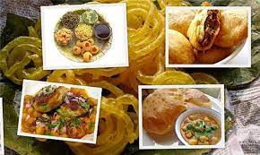
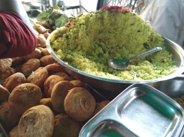

Popular classic street food snacks at Jabalpur are Samosa, Aloo Banda, Mangoda and Bhajiya etc.
From Chat perspective the popular items are Fulki/Panipuri, Gatpat (mixture), Aloo Chap, Samosa, Vada, Bhel-Puri etc.
Poha-Jalebi is also popular but during morning hours only.
During summers you will see carts selling Barf Ka Gola, ice bars, Kulfi, Jaljira, Lassi, Mangoshke and Dahi Vada etc.
Come winters and you have carts of Gajak, Laiya etc.
You also will find carts selling seasonal fruits / salads / Munchies like Janun, Guava, Mango, Cucumber, Ber, Green Gram, sugarcane chunks (Gaderi) etc.

